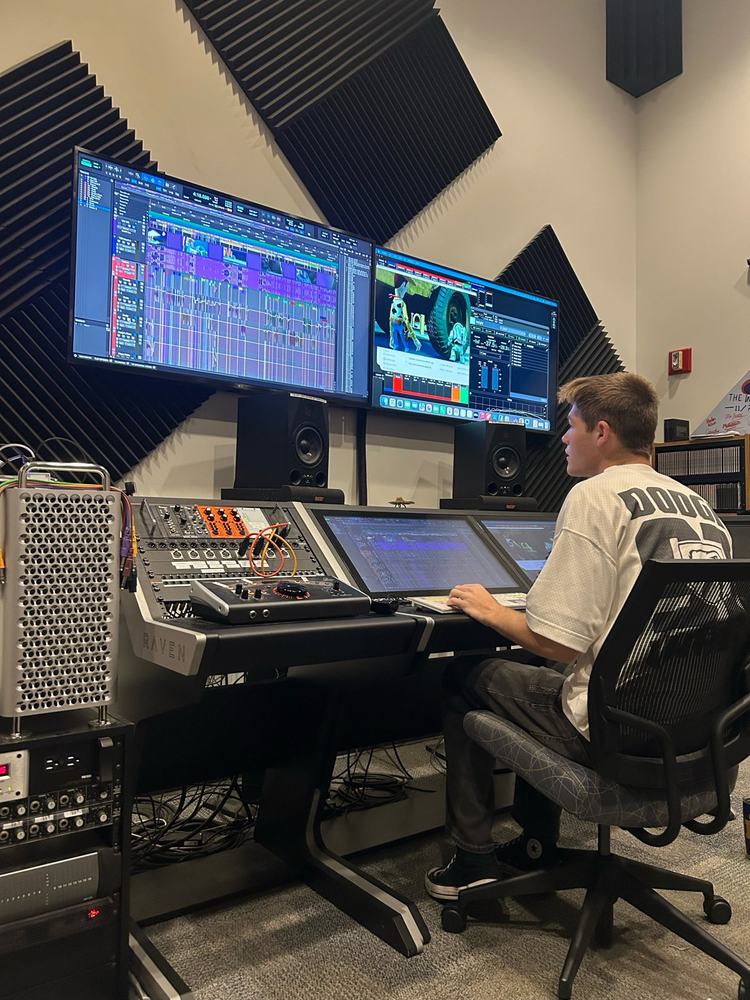

ADR · Foley · Sound mix
Toy Story
ADR.
For this class assignment, I re-recorded and sound-designed a scene from Toy Story, creating an immersive movie-style mix with my own interpretation of the original.
Headphones recommended. Enable sound in the player to hear the dialogue, Foley, and final mix.
Class assignment using an existing Toy Story scene. Source picture: Toy Story. Watch on Vimeo ↗

01 / Foley
Every bend and creak.
Recreating the small bends and creaks of plastic gave the scene more depth and made the characters feel more real.
I used an old plastic keyboard and telephone to create Buzz’s sounds. Bending and crushing the plastic produced the closest match to the sounds I was looking for.
02 / Dialogue recording
A dance with a rhythm.
I approached dialogue recording like a dance with a rhythm. That sense of timing helped the performers match the pacing and emotion of the scene.
03 / Final mix
Immersion with intention.
I wanted the scene to feel immersive and as close to a finished movie mix as possible, while allowing it to sound different from the original.
This was my first project mixing to a specified loudness target. For the assignment, I worked to a Netflix-based target of −27 LUFS ±2 LU, using Insight with Relay to monitor the final mix.
04 / Reflection
The work behind the detail.
I learned that recording Foley involves far more than I had expected. It is a long, detailed process that requires sustained concentration and creative problem-solving.
Next screening